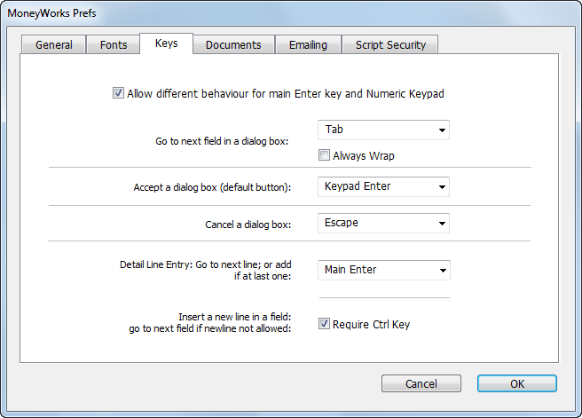
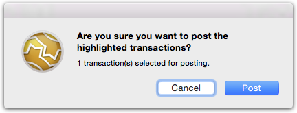

MoneyWorks Manual
Keys
The Keys tab determines how the enter, tab and return key on your keyboard operate. You might want to do this if you are using a notebook (that only has one enter key), or because you are used to using the enter key as a tab key to take you from field to field.
The ↩/return key is located on the main part of the Windows keyboard, and is often shaped like a back-to-front “L”
Note: Windows users will note that there are normally (notebooks excepted) two keys labelled enter on your keyboard. In some situations these are handled differently in MoneyWorks. Where we need to differentiate these in this manual we refer to the one on the main body of the keyboard as the return (or ↩) key, and the one on the numeric entry pad (on the right of the keyboard) as the keypad-enter.
The default settings are shown below (the Mac settings refer to the Return key instead of the Main Enter key).

Allow different behaviours for main Enter key and Numeric Keypad Enter key: For Windows only. If set (which is the default), the behaviour for the keypad enter key and the main enter key will be different. If you have a laptop computer, you will probably only have one enter key, so you should turn off this option. In this case the F11 function key is available in place of the missing Enter key.
Go to next field: This is the key that takes you to the next field in a dialog box or entry screen. Normally the tab key is used to do this.
Always Wrap: If this option is on, when you tab out of the last detail line in a transaction MoneyWorks will tab to the first field in the transaction window (replicating the behaviour of ancient versions of MoneyWorks). If it is off, a new detail line will be added if you tab out of the last detail line.
Accept a dialog box: This is the key that activates the default button on a dialog box (the default button will always be highlighted, as shown below). The keypad enter key is normally used for this.


The default button is the one that has a highlight on it.
Cancel a dialog: This is the key that activates the cancel button on a dialog. It is normally the escape key.
Detail line entry: The Go to Next Line key is the key to add the next detail line while entering transactions. Pressing this key (which by default is the main enter or return (↩) key) while in one detail line will move you to the next one down, or add another detail line if you are on the last one. Alternatively, provided you do note have the Always Wrap option on, you can use the defined tab key to tab through the last field on the detail line and onto the next line.
Require Ctrl/Option key: Some fields (description in the detail line for example) allow multi-line entries. A multi-line entry is normally achieved by pressing the “go to next line” key.

In the detail.description field, pressing this key will not create a new detail line, but rather a multi-line description. Setting the Require Ctrl/Option key preference means that a new line within the same field will only be created if the ctrl key (Windows) or the option key (Mac) is held down while pressing the detail line entry key.